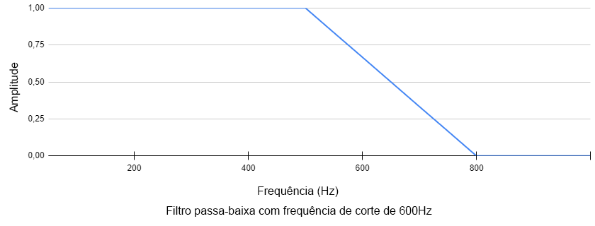
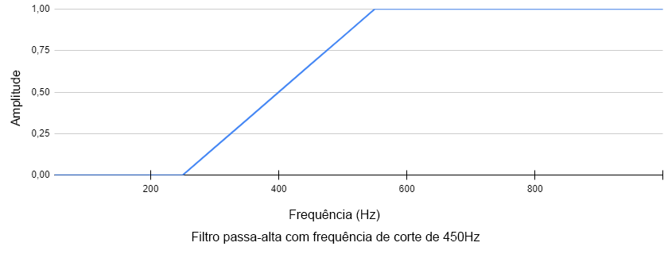
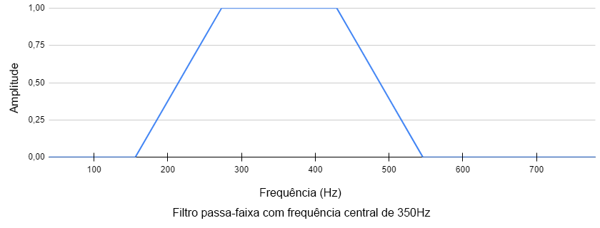
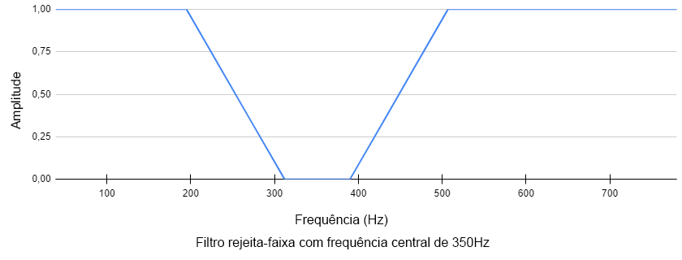
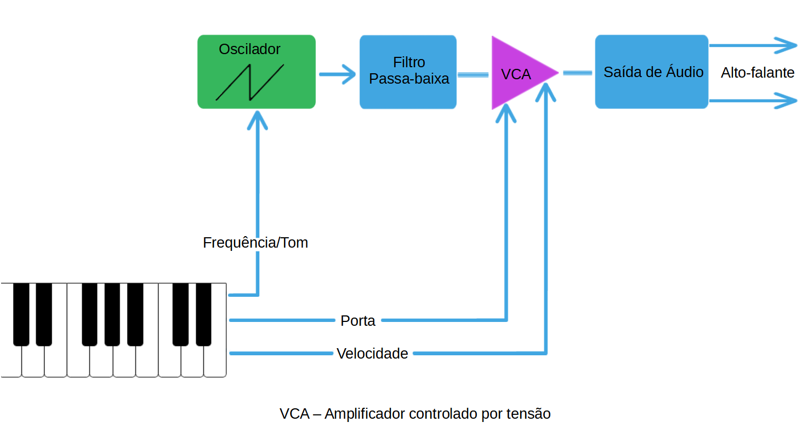
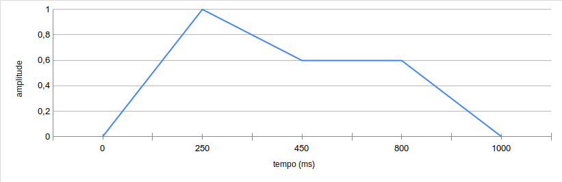
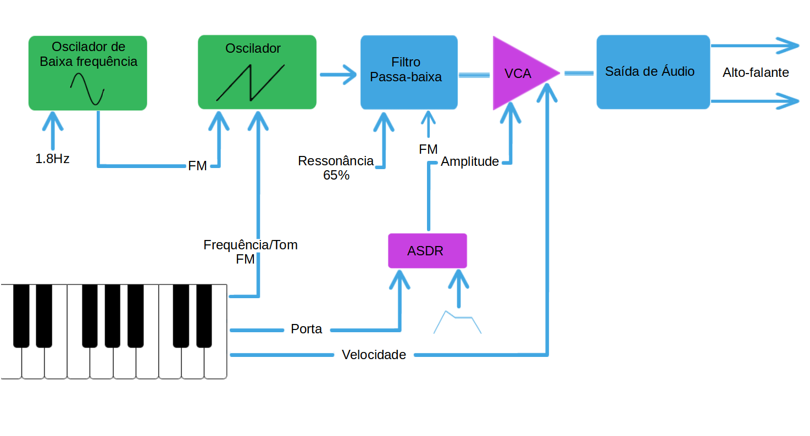

Filtros são de forma geral, ferramentas para manipular sinais. Qualquer dispositivo que modifique um sinal em qualquer forma é tecnicamente um filtro. Entretanto, ao se referir a um filtro, normalmente se referem ao tipo de filtro que modificam o conteúdo harmônico do sinal, alterando as características do áudio no domínio da frequência. Esse é o sentido que usaremos para o termo “filtro” neste artigo.
Filtros permitem que você selecione uma faixa de frequências em um som, e amplifique ou reduza essas frequências. Diminuindo frequências altas ou aumentando frequências baixas em um som, fazendo com que soem abafadas. Filtros desse tipo acontecem na vida real o tempo todo. Por exemplo, se você tentar falar com alguém com algo cobrindo sua boca, parte da alta frequência da sua voz será filtrada pelo obstáculo, deixando sua voz abafada.
Um filtro passa-baixa permite com que baixas frequências atravessem o filtro, enquanto barrando frequências altas, te permitindo escutar apenas as baixas frequências. Enquanto isso, o filtro passa-alta faz exatamente o contrário, permitindo apenas a passagem de altas frequências enquanto barrando as baixas. O ponto a partir de onde começa a barragem é chamado de “frequência de corte”.
 Um filtro passa-faixa é como um passa-baixa e um passa-alta usados em combinação para isolar um grupo de frequências selecionado para passar, enquanto barrando todas as outras frequências. O filtro rejeita-faixa funciona de maneira oposta ao passa-faixa, selecionando um grupo para isolar e NÃO permitir a passagem, enquanto todas as outras frequências podem passar.
 Esses filtros possuem uma grande variedade de propriedades na qual possuímos um certo grau de controle. Para filtros passa-baixa e passa-alta podemos mudar a frequência de corte, permitindo o controle do alcance das frequências afetadas. Para filtros passa-faixa e rejeita-faixa, no lugar de mudar a frequência de corte, podemos mudar a largura de banda onde se encontra a faixa de frequência afetada.
Vários filtros permitem mudanças na ressonância. A ressonância ocorre quando quando um som na banda passante perto da frequência de corte é mandado de volta ao filtro conforme ele sai, gerando um feedback. Esse feedback afeta o volume dessas frequências, assim como o timbre do som. Um pedal wah-wah é um filtro passa-baixa ressonante com um pedal controlando a frequência de corte.
Vamos adicionar um módulo de filtro passa-baixa ao nosso sintetizador. Colocaremos ele entre os osciladores e nosso amplificador controlado por tensão. Dependendo de como controlarmos ele, esse filtro pode fazer vários tipos de mudanças ao nosso som, como diminuir um pouco o agudo das frequências altas assim como vários outros efeitos especiais.
Na imagem a seguir, foi adicionado nosso filtro a montagem no modulator, permitindo um controle das frequências, e possuindo parâmetros que permitem a mudança na frequência de corte e de ressonância, assim como o tipo de filtro.

Para que tenhamos o melhor do nosso sintetizador, precisamos de uma maneira de controlar cada um dos seus componentes de forma interna. enquanto vários sintetizadores tem uma variedade de botões para controlar o som, a maioria das pessoas tem apenas duas mãos, e é realmente complicado girar mais de dois potenciômetros ao mesmo tempo para ajustes. Por sorte, quase todo módulo do sintetizador pode ser controlado por outro módulo. Nosso sintetizador já faz isso, a frequência do oscilador e o volume do nosso amplificador de tensão são controlados pelo nosso teclado.
Uma forma que podemos controlar sinais com um sintetizador é usando um módulo chamado envelope generator. Quando um envelope generator recebe um sinal “on”, ele manda um novo sinal que pode ser usado para controlar outro módulo. Diferente de um oscilador, que repete seu sinal várias vezes, um envelope generator manda seu sinal apenas uma vez. Mas assim como um oscilador, podemos olhar o sinal produzido em um gráfico no domínio do tempo.
Para cada fração de segundo que o envelope generator estiver ativo, ele manda um sinal de controle para outro módulo. Uma forma de pensar no envelope generator é como um mapa para controle automático dos módulos. Por exemplo, o envelope da imagem acima começa a mandar um sinal que gradualmente move de zero até um, que é como girar um potenciômetro da posição mais à esquerda para a mais a direita. E em seguida o sinal desce gradualmente até o 0.7, que seria como mover o potênciometro um pouco para esquerda.
Envelopes como o usado como exemplo aqui são chamados ADSR envelopes, tendo esse nome devido aos quatro estágios que possuem: Ataque, decaimento, sustentação e repouso. Quando colocamos um módulo ADSR em um sintetizador, especificamos o que deve acontecer durante cada estágio assim que receber o sinal “on”. Por exemplo, o envelope acima possui um estágio de ataque que demora 250 milissegundos, onde o nível se eleva a 1. depois disso possui o estágio de decaimento, demorando 200 milissegundos onde o nível diminui para 0.7, durante o estágio de sustentação o nível se mantém em 0.7 enquanto o envelope generator estiver recebendo o sinal “on” e quando o sinal muda para “off” entramos no estágio de repouso, onde demora 200 milissegundos para o nível descer a 0.
Envelopes ADSR são frequentemente usados para controlar o volume de um som, mesmo eles podendo ser usados para controlar quase tudo dentro de um sintetizador modular. Por exemplo, o mesmo envelope pode controlar um filtro passa-baixa ressonante, fazendo um efeito de um “woosh” conforme tocamos cada nota.
Vamos adicionar um ADSR para o nosso sintetizador, ele irá fazer o som ter um fade-in gradual, sustentar, e então cair rapidamente. Para isso usaremos o módulo ADSR no modulator conectado ao input do nosso amplificador.

Outro tipo de módulo frequentemente utilizado para controlar outro módulos é o oscilador de baixa frequência, também conhecido como LFO. Um LFO é como um oscilador normal, podendo ter qualquer forma de onda e amplitude que especificarmos, mas possui uma frequência super baixa usada normalmente para controlar outros módulos no sintetizador. Por exemplo, um LFO pode mover o nível de volume do amplificador para cima e para baixo, causando um efeito de tremolo. LFOs são como pequenos robozinhos que ficam girando os potenciômetros para você.
Vamos adicionar um LFO para o nosso sintetizador que causa o tom do nosso oscilador para balançar para cima e para baixo um pouco, como um violinista move a mão para gerar um vibrato, também iremos usar o envelope generator para modular a frequência do nosso filtro, para que tenhamos um efeito de varredura automáticamente em cada nota, especialmente se aumentarmos a ressonância do filtro. Usando um sinal de controle para mudar a frequência de outro módulo é chamado de modulação de frequência, ou FM, como indicado no diagrama abaixo.
Na imagem a seguir, o ADSR foi adicionado ao modulator, nos dando controle sobre cada um dos 4 estágios discutidos anteriormente neste tutorial, permitindo um controle sobre os efeitos de aúdio.

Quase todos os sintetizadores disponíveis comercialmente e softwares de síntese musical operam usando esses principios básicos, com esse conhecimento e um pouco de ingenuidade, você nunca precisará usar um preset novamente.